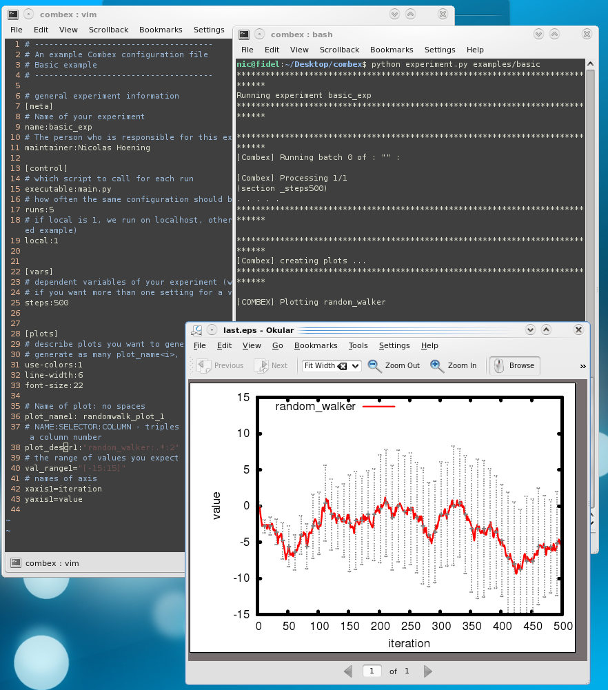
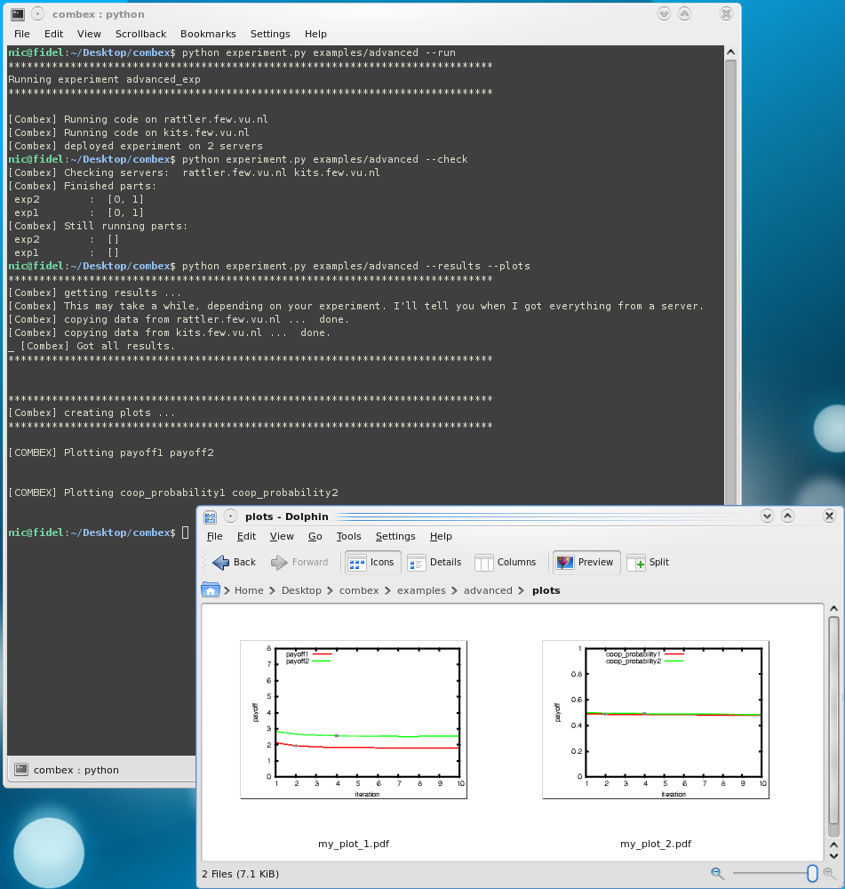

Welcome to the documentation of Nicessa (which has its online home here).
This page will hopefully be of help to learn about Nicessa. However, this is still ongoing work. If you don't find help here, have a look at the examples or contact the maintainer of this project.
Note: Nicessa is undergoing some major updates right now, which will eventually be accompagnied by new and better documentation. Meanwhile, this document is accurate for nicessa revision 113

Nicessa runs your simulation experiment for you. You write the actual experiment, but nicessa relieves you of:
Basically, almost any. Let me explain the workings of Nicessa by making 4 short points:
I develop nicessa in a subversion repository and don't make stable versions available (maybe later). You get the latest version by typing svn co http://my-svn.assembla.com/svn/nicessa (subversion, or svn, should be installed on most unix systems these days, otherwise you have to install that first). This downloads the repository and you can always update it by going in that new "nicessa"-directory this created and type svn up.
I also made a shortcut to the main executable of nicessa in my ~/.bashrc file: alias nicessa='python </your/system/path/to/>/nicessa/trunk/experiment.py', so that on any command lime, I can just type nicessa and start it.
Place an experiment.conf and the code to run your simulation in a folder of your choice.
Call ./experiment.py <path-to-your-experiment-folder>. Or, if you also have this shortcut I created for myself
(see here), you can go to your experiement folder and simply type nicessa .
The results will be put in the "data" directory, in your folder
(but if you like the plotting capabilities of nicessa you might never look there). Plots go in the "plots" directory.
I refer you to the "basic" example, that should speak for itself and is commented well. The two important things to look at are the configuration file and the simulation executable. Ah, what the heck. I'll explain the most important steps here :) The basic example is a really simple experiment. We only want to simulate a random walk, run it several times and plot the average outcome.
So from the configuration, here is general information about our basic experiment:
[meta]
# Name of your experiment
name:basic_exp
# The person who is responsible for this experiment
maintainer:Nicolas Hoening
[control]
# how often the same configuration should be run
runs:5
# which script to call for each run
executable:main.py
# if local is 1, we run on localhost, otherwise provide a server.conf file (see advanced example)
local:1
Then, we can add variables specific to our experiment. This is simple in this case,
we only specifiy how long our experiment should run:
[vars]
steps:500
Then, we need an executable. Here is the Python file from the basic example: (Note that the executable doesn't have to be a Python script. All you need to provide is any code that is executable (e.g. a Java, C or Perl script) and have it write its logs to the file with the name provided by Nicessa. Variable settings are also available to the script)
#!/usr/bin/python
"""
Example nicessa experiment runner,
showing very basic usage by conducting random walks
The only thing actually needed is a __main__ block (see bottom), so that this script is callable
from the command line.
The rest of this file shows how configuration files can be used and log files be written.
Pointers to both are supplied by Nicessa.
"""
from ConfigParser import ConfigParser
import random
import sys
if __name__ == '__main__':
'''
This gets called by nicessa for each run, since the name of this script was named in experiment.conf
Nicessa will pass:
(1) the name of the log file
(2) the name of the conf file
which are specific to this run.
'''
# just open the log to be able to write
log = open(sys.argv[1], 'w')
# open the conf file for this run with the standard Python way
conf = ConfigParser()
conf.read(sys.argv[2])
# The variables from the conf for this run can be accessed like this
max_step = conf.getint('vars', 'steps')
val = 0
random.seed()
for step in range(1, max_step+1):
dbl = random.random()
if dbl > .5:
val += 1
else:
val -= 1
# we write two columns per row: step and value
log.write("%d, %d\n" % (step, val))
log.flush()
log.close()
Also note that Nicessa likes log files in the comma-separated-value format.
So we have an experiment and it gets run by nicessa and it writes to log files. What do we do with them? Let's make a
nice graph!
Nicessa organizes all its log files in the "data" folder. For each configuration, log files are put into a subfolder whose name
contains all variable settings. We have only one possible setting now, so in examples/basic/data we now find the folder
_steps500, containing
five log files (Why five? We told Nicessa to run each setting five times in the configuration).
Note that currently, Nicessa overwrites the data directory when it runs. You should backup big chunks of data when rerunning would be expensive.
Here is how we demand Nicessa to make a nice plot:
[plot-settings]
# describe plots you want to generate
use-colors:1
line-width:6
font-size:22
[plot1]
# Name of plot: no spaces
name: randomwalk_plot_1
# the range of values you expect in the plots (e.g. [0:100)]
val_range: [-150:150]
# names of axis
xlabel: iteration
ylabel: value
# graph description: You need at least _name (no whitespace) and _ycol.
# In addition, list variable settings in order to narrow down the dataset this graph should be about
graph1: _name:random-walker, _ycol:2
The descriptions of single plots can be in the main configuration file or, for convenience, be put into the subexperiment files (see next section).
There can be many plots, each having one or more graphs (numerate the options consistently, i.e. plot1, plot2, plot3 and graph1, graph2, graph3).
Pay attention to the graph descriptions. In addition to name and
y column, you can specify name-value pairs, where the names
refer to variable names. This will narrow down the dataset used
for making the graph and this is also why Nicessa puts all variable settings
in the data folder names containing the log files, so it can
easily pick the ones it needs to collect data from. here, we
plot all, so we only specify name and y column - the
advanced example has something a little more sophisticated.
$ python experiment.py examples/basic/
Here is the plot which should be found in the examples/basic/plots directory when everything went well:

This means that you have experiments of the same simulation that require some variables to be different from the others. You can have some more .conf files next to experiment.conf, one for each experiment. In those, you can specify variable settings that only hold in those experiments (these settings overwrite settings in experiment.conf). The configuration of the advanced example does it like so:
# we define two subexperiments here
[experiments]
configs:exp1,exp2
Then, we need to provide the configuraton files exp1.conf
and exp2.conf. There, we define a unique subset of settings in
their own [vars] - section. We also give each experiment an own name and name a new maintainer for exp2 - my old pal Dick Cheney
(remember that settings in the experiment configuration files overwrite the general settings in the main configuration file).
[meta]
name:Prisoner Dilemma 1
[vars]
pd_t:5
pd_r:3
pd_p:1
pd_s:0
And exp2.conf:
[meta]
name:Prisoner Dilemma 2
maintainer: Dick Cheney
[vars]
pd_t:10
pd_r:3
pd_p:0
pd_s:-1
You'll find that the subfolders of the examples/advanced/data directory will now also carry the experiment name.
This is the listing of that directory after the experiment is run:
$ls examples/advanced/data
exp1_n30_epochs10_conditiondefault_pd_t5_pd_p1_pd_s0_pd_r3 exp2_n30_epochs10_conditiondefault_pd_t10_pd_p0_pd_s-1_pd_r3
exp1_n30_epochs10_conditionlearning_pd_t5_pd_p1_pd_s0_pd_r3 exp2_n30_epochs10_conditionlearning_pd_t10_pd_p0_pd_s-1_pd_r3
exp1_n6_epochs10_conditiondefault_pd_t5_pd_p1_pd_s0_pd_r3 exp2_n6_epochs10_conditiondefault_pd_t10_pd_p0_pd_s-1_pd_r3
exp1_n6_epochs10_conditionlearning_pd_t5_pd_p1_pd_s0_pd_r3 exp2_n6_epochs10_conditionlearning_pd_t10_pd_p0_pd_s-1_pd_r3
exp1_n70_epochs10_conditiondefault_pd_t5_pd_p1_pd_s0_pd_r3 exp2_n70_epochs10_conditiondefault_pd_t10_pd_p0_pd_s-1_pd_r3
exp1_n70_epochs10_conditionlearning_pd_t5_pd_p1_pd_s0_pd_r3 exp2_n70_epochs10_conditionlearning_pd_t10_pd_p0_pd_s-1_pd_r3
If you look into the plot-making of the advanced example, you'll
find that we use our variable settings to plot different data
sets. This is from exp1.conf:
[plot1]
name: my_plot_1
val_range: [0:8]
xlabel: iteration
ylabel: payoff
graph1: _name: payoff_exp1, _ycol:2, exp:1
graph2: _name: payoff_exp2, _ycol:2, exp:2
And this is from exp2.conf:
[plot1]
name: my_plot_2
val_range: [0:1]
xlabel: iteration
ylabel: payoff
graph1: _name:coop_probability_exp1, _ycol:3, exp:1
graph2: _name:coop_probability_exp2, _ycol:3, exp:2
And these are the plots we get:

Please also note that it does not matter to your script where the variable settings come from. If you specified a comma-separated list of options to try or if they are part of a subexperiment, your executable code will get one conf file with all variables available under the vars option (the configuration file for each setting is also put into the subfolder in the data dir).
You can let one or more remote servers handle the workload. Nicessa will try to split the work,
give each server some of it and fetch the results from them later.
See the screenshot below for a quick visualisation how you could work with it:
It shows how I run the advanced example remotely, check if they're finished, get results and plot them. Please note that every server is
assigned a batch for each of the two experiments:

It is very simple to extend the configuration with some server credentials in a separate file. Please look at the advanced example for how to do it. We can turn on remote mode in the main conf like this:
local: 0
Then, Nicessa will look for a file called servers.conf with server credentials.
Here is an example:
[servers]
user0: nic
server0: nic1.server.net
path0: nicessatest
passwd0: secret
cpus0: 3
user1: nic
server1: nic2.server.net
path1: nicessatest
passwd1: secret
cpus1: 1
# Here, we could specify (comma-separated) more files or whole folders that are needed
# on the servers to run this simulation (in addition to your executable)
[code]
files:
folders:
# Here, we can specify healthy waiting times when communicating with the servers:
# how long to wait before checking for results, and then with with intervals to check
# All of these are in seconds. You know your experiment and your network, so you know best what fits here.
[communication]
wait:30
check:10
Nicessa will transfer all the files to the servers and start background sreens on them, running a portion of the
workload (it only makes sense to have several servers when your experiment has multiple settings). Then it checks
each server periodically if they are done. If they all are, it fetches the results. Then, plots are made locally, like usual.
Note 1: The cpus-setting gives you the opportunity to balance the workloadds better. This makes sense if some of your servers have more CPUs than the others (or you want to keep a CPU free on your own or your colleagues computer). If all your servers have the same amount of CPUs, better leave it all at 1.
Note 2: When running remote experiments, make sure that the servers are known in your .ssh/known_hosts file. I always connect to the servers once per manual ssh login, where ssh asks me if I want to add that server to that file.
Nicessa is not much more than a bunch of scripts (Python and one bash script) that I wrote
for my experiments while doing my Masters thesis. I made them work better each time and now
bundled them to work together via one configuration file and specified entry point to run
an actual executable.
Here is a more detailled picture of what is going under the hood:
You need Bash* and Python (I mostly test on 2.6 but lower versions, say 2.3+, should also work)
You need the python-paramiko library for remote server support.
For plotting, you need gnuplot and epstopdf (some tips: for debian-linux, epstopdf
is currently in the "texlive-extra-utils" package. On OSX, install gwTex via i-installer)
* yes, Unix only for now. Contact Nic if you want to help.